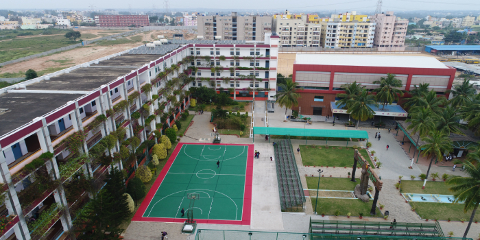

Garden City University is UGC approved state private university in Karnataka commenced its operations in 2017. The legacy of Garden City University comes from the Garden City Group of Institutions established in 1992.
At Garden City University, the primary focus is on revolutionising the outlook of education in India by raising existing standards and elevating student’s employability, skills and knowledge.
“JOY OF LEARNING” is the principle guiding strategy for all courses at GCU. GCU offers its students 6 different study routes: The Scholarly Route, The Managerial Route, The Skill based Route, The Research Route, The Entrepreneurial Route and The Academic Route.
GCU stands by its motto of “Emphasis on Life” and works on both the Emotional Quotient and the Intelligence Quotient of its students. The culture of education here at GCU is to foster positive emotions, build stronger relationships and achieve a sense of purpose, in line with our values and beliefs.
